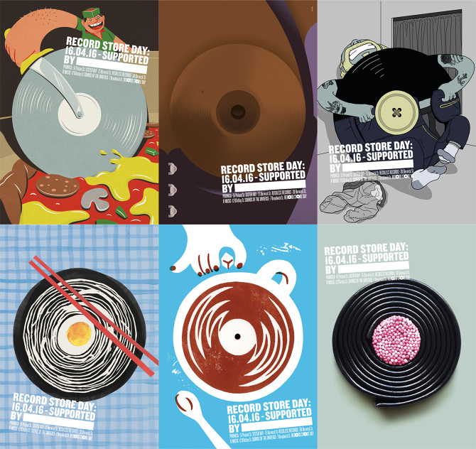
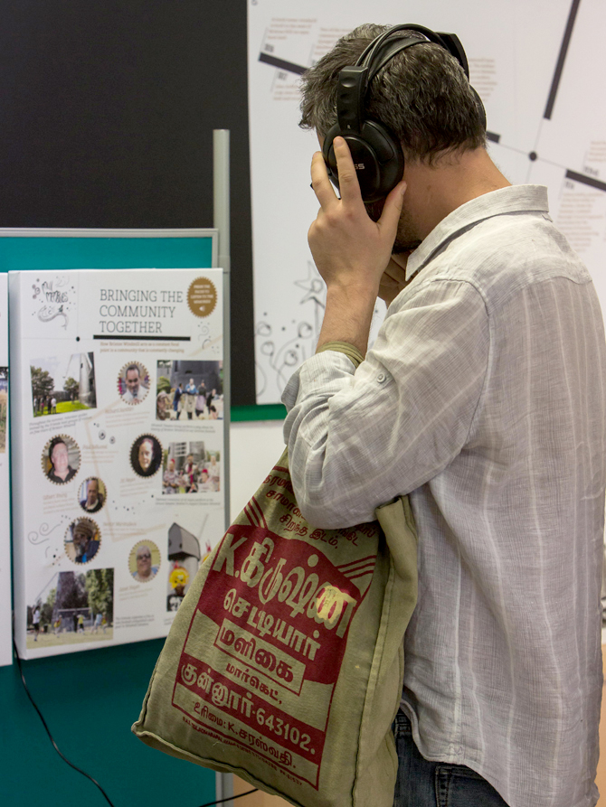

Work
Record Store Day 2016
We love Record Store Day and decided to support SOHO's record stores by creating a poster campaign in which the independent shops and restaurants of SOHO could use to promote their fellow independent record stores.

It's all about the FUNction.™
Hi there, my name is Pansy and welcome to my portfolio site.
I am a creative geek who has worked in various advertising agencies from big (Leo Burnett) to small (HMDG) producing campaigns across all platforms.
Creative ideas to me can be fun, they can be useful, they can be seemingly bonkers or they can be all of the above. Most of all they need to excite and get people talking.
My curious or some might say nosy nature for culture, innovations and just about everything gave me lots of valuable insights to create work that are relevant and engaging to people.
In my own time, I create campaigns and PR ideas for not-for-profit organisations, including 38 Degrees and The Brixton Windmill, a real old windmill that can be found on a housing estate in South London. I am also a mentor at the University of the Arts London.
We love Record Store Day and decided to support SOHO's record stores by creating a poster campaign in which the independent shops and restaurants of SOHO could use to promote their fellow independent record stores.
A campaign to help young people present themselves in the best way online.
As a personal project I have been involved with the Friends of Windmill for over four years, PR-ing an old windmill that can found on a housing estate in Brixton. In late 2012 we won a grant from the National Lottery Heritage Fund to launch a project called Mill Memories. Mill Memories is based on interviews with local residents about their memories of Brixton Windmill, showing its importance in local history and culture. We produced an exhibition and a theatrical performance, which was put on at a Big Lunch in May 2014. The book and interactive installations I produced were commended by the National Lottery Heritage Fund for the outstanding quality of work and are now used as teaching material for oral historians. The interactive installations are now touring around London libraries and the book can be found in the British Library amongst others.
